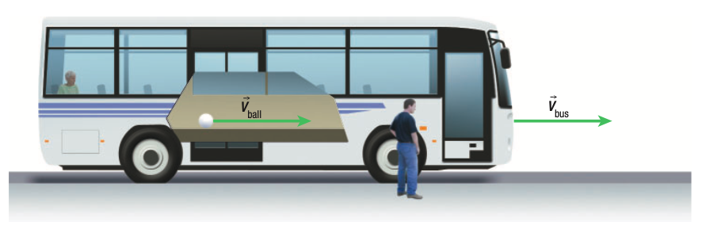
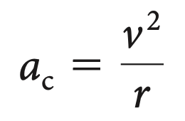
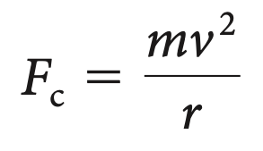

Circular Motion
Inertial and Non-Inertial Frames of Reference
As mentioned in the post on Kinematics, aframe of referenceis a system relative to which motion is observed. An inertial frame of reference is a frame of reference that moves at azero or constant velocity.Newton’s first law of motion (the law of inertia) holds true in an inertial frame of reference. A non-inertial frame of reference is a frame of reference that accelerates with respect to an inertial frame of reference. The law of inertia does not hold true in a non-inertial frame of reference.
An example that can be used to explain this is if there was a ball placed on the ground of a bus. As the bus comes to a stop, the ball still rolls forward. As a passenger sitting in the bus, it appears as if there is a force on the ball that is moving it forward. To explain this, we have fictitious forces.Fictitious forcesare non-existent forces (though they are apparent) created to explain the motion of objects in a non-inertial frame of reference.
Uniform Circular Motion
Uniform circular motion is the motion of an object with a constant speed along a circular path that has a constant radius. Objects that move with uniform circular motion are in non-inertial frames of reference. Since these objects move in a circular path, their velocity is constantly changing direction, meaning that they are accelerating. Centripetal acceleration is acceleration that is directed towards the center of a circular path. The centripetal force is the net force that causes centripetal acceleration. Without the centripetal force, an object would not be able to move in uniform circular motion.
The centripetal acceleration is:
The centripetal force is:
Real-Life Applications
Some applications of circular motion include a satellite that is orbiting the Earth at a constant height, a car turning in a circle in a roundabout, and a skater turning in a circle on the ice. Although these may not be perfectly circular or uniform, the concept is still being used here.
Centrifugal Force
Thecentrifugal forceis the fictitious force in a rotating frame of reference (a non-inertial frame of reference).
To explain this further, we can use the example of the Earth’s surface. Earth’s surface is a non-inertial frame of reference, as it is rotating. Objects that are close to the surface of the Earth are pulled towards the centre of earth by gravity, which is a centripetal force. Since the Earth is rotating on its axis, it creates a centrifugal force on objects that are at Earth’s surface. The magnitude of the centrifugal force at the equator is at maximum. However, as you move toward either of the poles, the magnitude of the centrifugal force decreases, and is zero when you are at the poles.
Artificial Gravity
In space, it looks as if astronauts are floating. This is because the spacecraft and everything inside it are in free fall, which means that the apparent weight of the astronauts is zero. Scientists have researched the effects of extended free fall on our human bodies. Through research, we have understood that if there are no forces acting on the human body, our muscles will become smaller and our bones will become brittle. In addition, blood vessels swell due to excess body fluids in the upper body.

To combat these issues, engineers are designing spacecraft that haveartificial gravity.Designing spacecraft that have artificial gravity means that the value of gravity has been changed artificially to more closely simulate Earth’s gravity. This can be achieved by making a spacecraft rotate constantly, and at a certain frequency, it can equal Earth’s gravity. This means that the astronauts’ apparent weight will equal their weight on Earth.
Application
A gravitron is an example of the centrifugal force and artificial gravity. Here is an example of what riding a gravitron is like: